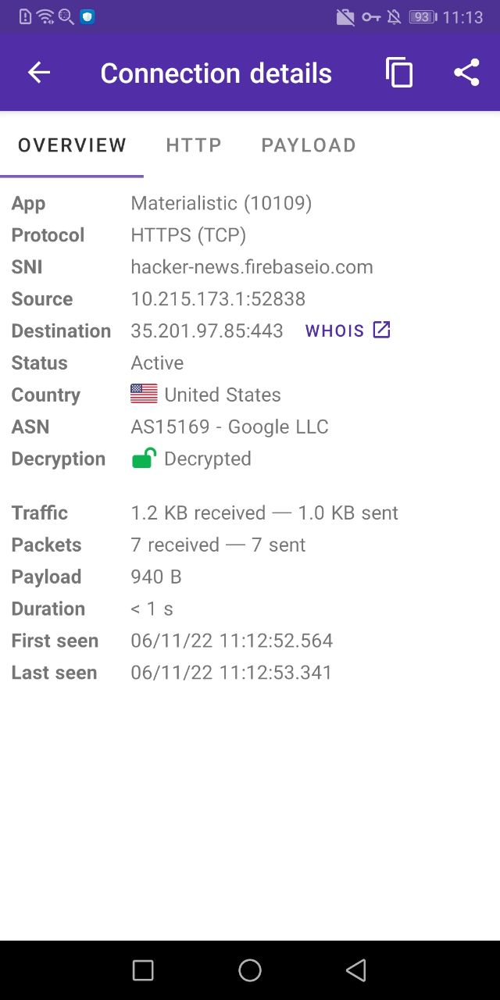
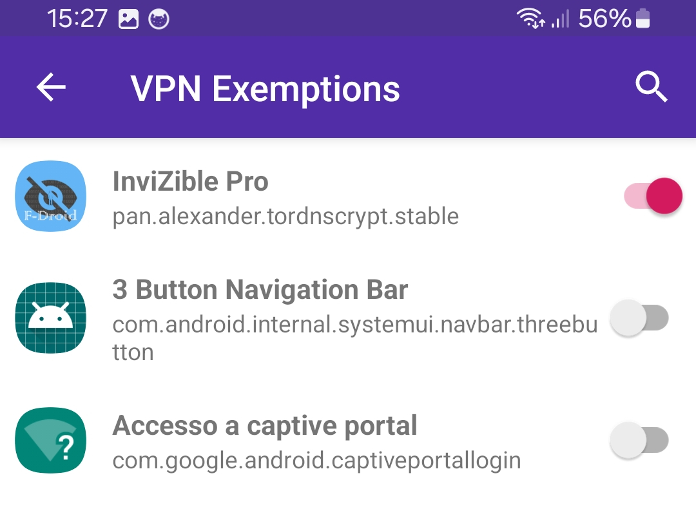
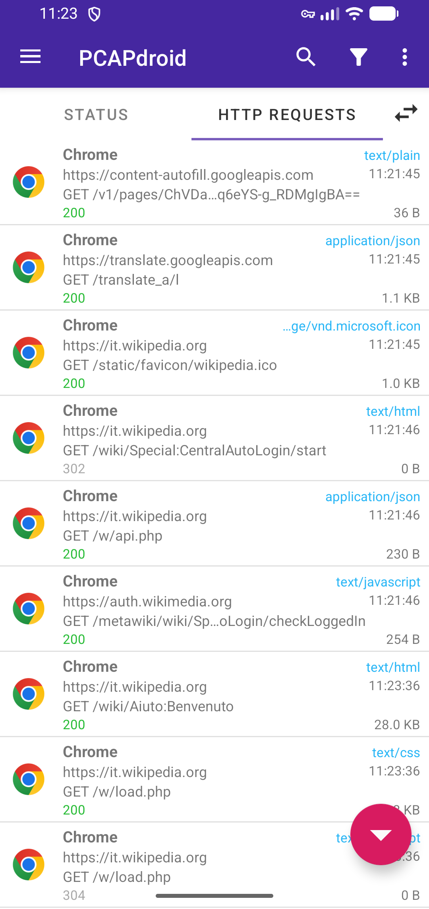

PCAPdroid 挖到底：五个藏得深到官方文档都没说的冷门玩法
我把 PCAPdroid 翻了个底朝天，发现五个隐藏设置：虚拟 IP 不是泄漏、TLS 解密还有进阶玩法、防火墙的端口级拦截、SOCKS5 配合 Tor、以及 HTTP Server 模式导出抓包。这些功能大多数人用了半年都没碰过。
你以为 PCAPdroid官网 就是一个在手机上抓包看流量的工具？打开应用、点开始、盯着 Connections 列表跑，这就是你对它的全部认知？我之前也是这么想的——直到把它翻了个底朝天，才发现这货藏的东西远不止"抓包"这么简单。
今天就聊聊我挖出来的五个隐藏功能，每一个都需要拐好几个弯才能摸到开关。
第一个：10.215.173.1 不是 VPN 泄漏，是它自带的 NAT 层
这是我见过最多人误解的地方。刚开抓包时盯着 Connections 列表一看，所有源 IP 都变成了 10.215.173.1 或者偶尔 10.215.173.2，瞬间慌了——这不是 VPN 泄漏吗？我又没开任何代理，怎么流量全跑到一个奇怪的内网地址去了？
翻了半天才搞明白，后来去查了 PCAPdroid文档 才确认，这是 VpnService 模式在内部做 NAT 的必然结果。
简单说：PCAPdroid 创建了一个虚拟网卡，所有应用的流量先被引到这个虚拟接口上，源 IP 被统一改成 10.215.173.1，经过它内部检查一遍之后，再改回设备的真实公网 IP 发出去。对外你访问什么网站、显示什么 IP，完全不受影响。10.215.173.1 就是个跑在你手机里的流量代理中转站，跟"泄漏"半毛钱关系都没有。
至于为什么还有个 10.215.173.2 那是专门给 DNS 查询准备的——部分 DNS 请求会被路由到这个地址，方便 PCAPdroid 单独处理 DNS 解析和加密 DNS（DoT/DoH）的识别。
想验证很简单：开着 PCAPdroid 抓包，浏览器访问 whatismyipaddress.com，它显示的应该是你家路由器的公网 IP，绝不会是 10.215.173.1。
这个认知还能帮你判断 PCAPdroid 是不是正常工作着——如果源 IP 显示的是应用自己的包名加设备真实 IP，说明 VpnService 模式根本没跑起来。
第二个：TLS 解密不只是看锁颜色，Full Payload 才是杀招
Connections 列表里每行右边那个锁图标大家都见过吧？灰色 = 未加密、绿色 = 解密成功、红色 = 解密失败、橙色 = 协议不支持解密。
但你有没有试过点开一条绿色锁的连接，往下翻到最底部看看 Full Payload？
默认情况下 PCAPdroid 只解密到请求头层——能看到 SNI 域名、HTTP 方法、UA 字符串这些。但在顶栏设置 → Traffic Inspection 里把 Full payload 打开之后，它会尝试把整条 TLS 会话的加密流量都解出来，包括 POST 请求体、响应内容、甚至 JSON 格式的 API 返回值。
这意味着什么？意味着你可以直接在手机上看到某个 App 发给后端服务器的完整 JSON 请求，或者把某个 App 拉下来的 API 响应原文扒出来——不需要用电脑开 Wireshark 再搭代理那么麻烦。
当然有几个前提要注意：证书锁定（certificate pinning）的应用解不了，红色锁就是这个原因；部分银行类 App 用了额外的加密层，就算解密了也可能只拿到二进制数据。但对 90% 的普通应用来说，开了 Full Payload 之后，你看到的东西比一般想象的要多得多。

第三个：防火墙不止拦整个 App，还能做到端口级拦截
长按 Connections 列表里的某条连接，或者在 Apps 标签里长按某个应用图标，都会弹出上下文菜单。绝大多数人到这里就停了——最多把这个应用加到黑名单。
但你有没有点开过 Port Exemptions 和 Port Map？
Port Exemptions 是防火墙的进阶设置，它允许你在"允许所有流量通过"的基础上，只拦截特定端口。比如你想让某个游戏正常联网、但禁止它通过某些端口上传遥测数据——不需要把整个游戏拉黑，只在防火墙里给那个遥测端口加一条拦截规则就行。
Port Map 更隐蔽了——它在 Status 标签页找了很久才摸到。这个功能可以把 PCAPdroid 抓到的流量通过端口映射转发到你指定的本地端口上，配合调试 App 接口的时候特别好用：手机端抓包、端口映射到 8080、电脑上就能用 curl 直接调被映射过去的接口，省掉在手机上手动复制粘贴的麻烦。

第四个：搭配 SOCKS5 + Tor，抓同时在暗网跑的流量
很多人不知道 PCAPdroid 自带 SOCKS5 代理支持——在顶栏设置里翻到 VPN 那一块，能看到 SOCKS5 proxy 开关。
我试过用 Tor for Android 加 PCAPdroid 的组合——PCAPdroid 直接 官方下载 拿最新版装好，然后先在 Tor 设置里开启 SOCKS5 代理监听（一般是 127.0.0.1:9050），再在 PCAPdroid 的 SOCKS5 代理里填上同样的地址端口。之后打开 PCAPdroid 抓包时，所有流量在离开设备前会先经过 Tor 的 SOCKS5 代理加密走 Tor 网络出去。
这个玩法有什么用？当你想测试某个 App 会不会在你用 Tor 匿名浏览的同时偷偷泄漏明文连接时——PCAPdroid 能把所有不经过 Tor 的旁路流量抓得一干二净。对隐私测试党来说这是刚需，但对普通用户来说可以直接忽略——除非你真的需要这个。
第五个：HTTP Server 模式，抓包不用导出文件
Status 标签页里 dump mode 下拉框，默认是"无导出"，点开有好几个选项。大多数人只知道 PCAP 文件导出或者 UDP/TCP 导出。
但那个 HTTP Server 模式藏得真深。
选中 HTTP Server 之后，PCAPdroid 会在本地开启一个轻量 HTTP 服务器（地址会显示在 Status 页上，比如 http://127.0.0.1:8080），把实时抓包的数据以 HTTP 流的方式往外推。
想象一下这个场景：你在电脑上开个浏览器，访问手机的 HTTP Server 地址，就能实时看到手机上正在跑的所有连接——包括源 IP、目标域名、协议、流量统计。而且这个流是持续更新的，不需要等你手机上手动导出文件再传到电脑。
对做 App 抓包调试的人来说，这个模式几乎是神级效率提升。但它也有一个坑：HTTP Server 的地址默认只绑定在 127.0.0.1 上，意味着你只能在手机本机访问。想在电脑上看得通过 adb forward 端口转发，或者在同一个局域网里临时开一下绑定 0.0.0.0——但要注意安全，别让局域网里其他人也能访问到你的抓包数据。

别踩的坑
说了这么多隐藏功能，也顺便提醒一个我踩过的坑：TLS 解密时如果同时开 Full Payload，而且你的 TLS 解密规则里加了太多应用（包括证书锁定的），PCAPdroid 的内存占用会飙得特别夸张，有些机型上直接 OOM 杀进程。建议解密规则只加你真正需要看的那几个 App，别贪多。
最后
PCAPdroid 这个应用给我的最大感受是：它把功能都做全了，但藏得特别深。很多实用功能不是没做，是根本没人能一眼找到。
如果你之前只用它看 Connections 列表，今天不妨翻到顶栏设置里的 Traffic Inspection、VPN、Firewall 那几个区域多点点。挖透一个工具，比不停换工具效率高多了。顺手说一句，这套整理好的中文资料我分别同步到了 GitHub、Gitee 和 GitCode，国内访问直接走 Gitee 那套就行。